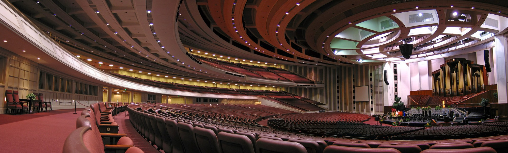

The Church of Jesus Christ of Latter-day Saints · a measurement experiment
Twice a year the fifteen men who lead The Church of Jesus Christ of Latter-day Saints — the First Presidency and the Quorum of the Twelve Apostles — preach at General Conference. Some of them sound more like a conservative politician; some sound more like a liberal one. A classifier that has read millions of words of partisan political speech can tell you which is which.
Before you see its answer, give yours. Drag each portrait onto the scale — right for the men you think sound more like a conservative, left for the men you think sound more like a liberal. Nothing is revealed until all fifteen are down.
About three minutes. Placements are recorded anonymously and used to study how closely people’s expectations track what the words actually say.
First, three quick questions
Every question can be skipped. None of them identify you.
Are you, or have you ever been, a member of The Church of Jesus Christ of Latter-day Saints?
How closely do you follow General Conference?
And your own politics?
Your turn
The further right you put a man, the more you think he sounds like a conservative; the further left, the more he sounds like a liberal. Drag a portrait onto the line, or tap one to drop it at the centre and nudge it with the ← → keys. Move them as often as you like until you lock in.
The scale carries no numbers — those are the answer. What it does carry is a yardstick: two real politicians, for comparison.
Politicians have given campus addresses at BYU, BYU‑Hawaii and Ensign College. Those speeches went through the very same classifier as the conference talks, which puts a real Democrat and a real Republican on this very same line — speaking in this very same setting.
So dropping a man right of the red line says he sounds more like a conservative than an actual Republican politician does. Left of the blue line says he sounds more like a liberal than an actual Democrat does. Between the two lines says he sounds like something in between.
Two warnings. Do not assume the fifteen fall between the lines — they may all sit to one side. And sounding like a party is not belonging to one: nobody’s politics is being reported here, only how their words score.
0 of 15 placed
The measure
Portraits from Wikimedia Commons — full credits at the foot of the page.
The scale is good at the ends and blunt in the middle. It can tell you with real confidence who sounds most like a liberal and who sounds most like a conservative; it cannot tell you who is seventh and who is eighth.
Precision follows the amount of preaching. Elder Gilbert is placed on two talks and President Eyring on 108, so the same dot carries very different weight along the row. Read the ends of the scale as the firm part, and the middle as a cluster rather than a queue.
That is what makes the two lines worth having: they turn the scale from a ranking into a yardstick. A man to the right of the red line used language this classifier scores as sounding more conservative than an actual Republican politician sounded — at the same pulpit, to the same kind of audience. Holding that much of the setting constant is exactly why it is the right comparison: the distance is not simply religious vocabulary reading as conservative.
What the lines do not say is where anyone stands. The blue line is not where Democrats sit in American politics; it is where a Democratic politician’s words landed on this ruler on one particular stage. Sounding like a party is not belonging to one.
Both benchmarks rest on small numbers, and the Democratic five contain both the most and the least conservative-scoring speeches in the whole politician set — which is why the lines are medians rather than means, and why they mark a rough region rather than a sharp threshold.
Zero is how the average general authority has sounded since 1984 — the year the longest-serving of these fifteen began speaking as an apostle. A man at zero sounds like the middle of his own cohort. The scale is in standard deviations of a single talk, so a man at +0.4 sounds about four-tenths of a talk’s worth of variation more conservative than that middle.
The cohort starts in 1984 rather than 1933 for a reason: a modern classifier reads old text as conservative through archaism rather than politics, so a pooled zero sits well above the modern mean and would push all fifteen left of it by construction.
Conference Center photograph by Ricardo630, CC BY-SA 2.5, via Wikimedia Commons. Portraits, all via Wikimedia Commons: Andersen (Ben P L from Provo, CC BY-SA 2.0); Bednar (Leslie Nilsson, CC BY-SA 4.0); Causse (Leslie Nilsson, CC BY-SA 4.0); Christofferson (Ben P L, CC BY-SA 2.0); Cook (Leslie Nilsson, CC BY-SA 4.0); Eyring (Leslie Nilsson, CC BY-SA 4.0); Gilbert (Johnw2, CC BY-SA 4.0); Gong (Mems47, CC BY-SA 4.0); Kearon (Leslie Nilsson, CC BY-SA 4.0); Oaks (Scott G. Winterton for Deseret News, CC BY-SA 4.0); Rasband (Leslie Nilsson, CC BY-SA 4.0); Renlund (Leslie Nilsson, CC BY-SA 4.0); Soares (Ben P L from Provo, USA, CC BY-SA 2.0); Stevenson (Leslie Nilsson, CC BY-SA 4.0); Uchtdorf (--ARTEST4ECHO, Public domain). Licence terms: CC BY-SA 2.0, CC BY-SA 2.5, CC BY-SA 4.0.

.jpg){kind=link}


.jpg){kind=link}


.jpg){kind=link}


.jpg){kind=link}